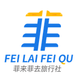
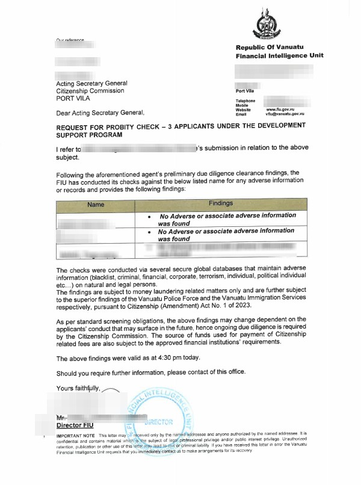
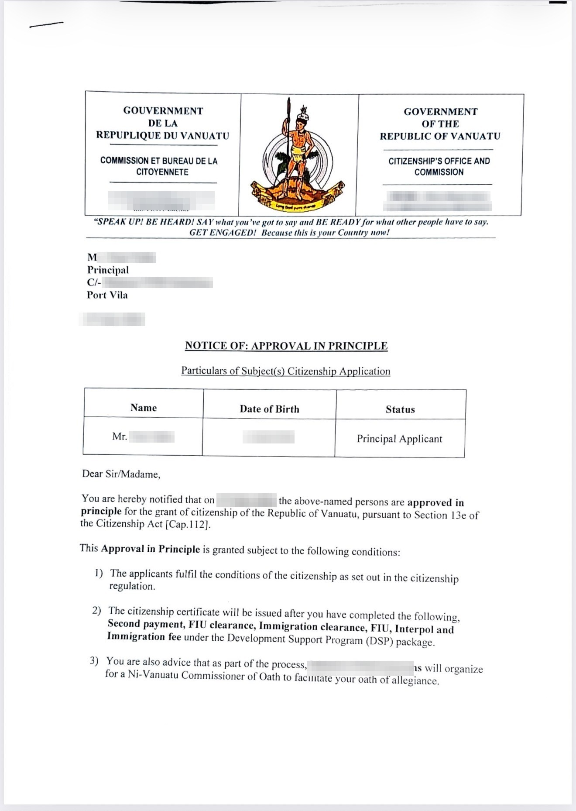
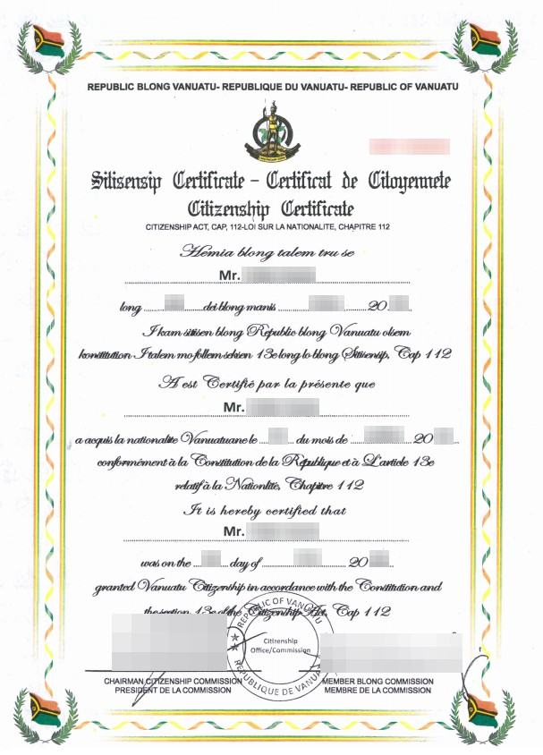
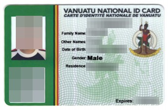
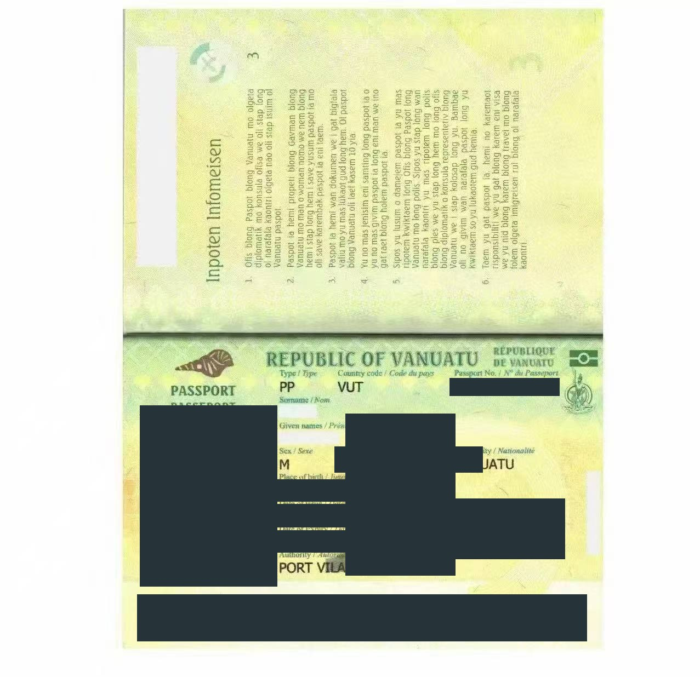

跳转到正文

VANUATU
瓦努阿图 · 捐款入籍
项目概览
免签国家
申请条件
真实案例
办理流程
增值服务
配套服务
常见问题
项目概览
免签国家
申请条件
真实案例
办理流程
增值服务
配套服务
常见问题
← 返回真实案例
案例1：瓦努阿图DSP 9月获批案例
办理时间线
7月21日
启动
8月4日
背调通过
8月17日
获得AIP
8月31日
获批公民纸
9月9日
获批护照
获批文件
个人信息与日期已做脱敏处理。

FIU背调函（已脱敏）

AIP通知（已脱敏）

公民证书（已脱敏）

身份证（已脱敏）

护照（已脱敏）